Reïnventing paradise/Bos(ch) Geluk
Video-installatie/olieverf op karton
Stedelijk museum 's-Hertogenbosch
2015
Video-installatie en performance in het kader van project Bosch Geluk in het Stedelijk Museum in 's-Hertogenbosch waarin Monique Broekman een hedendaagse interpretatie geeft van het thema ‘Het aardse paradijs’, al zo vaak verbeeld door verschillende kunstenaars. Hoe ziet de situatie eruit waarin men volmaakt gelukkig kan zijn, in alle vrijheid, in alle onschuld, puur en vol vertrouwen? De performance werd uitgevoerd door naturisten.
Gedurende een week poseerden iedere dag (9) duo's als hedendaagse Adam en Eva in een geprojecteerd en geschilderd paradijselijk decor in het museum en voor een green screen. De modellen werden gemonteerd in een bosfilm die na afloop van de performances te zien was. Scroll naar beneden voor meer foto's.
Lees meer
In maart 2016 kwam onderstaande publicatie uit met teksten van Edo Dijksterhuis.
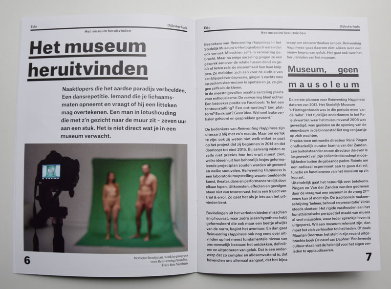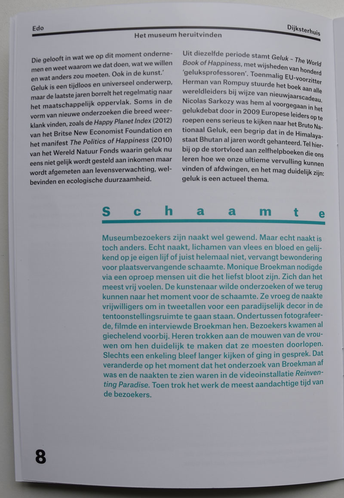
Lees hier het artikel in Brabants Dagblad van 30 september 2015
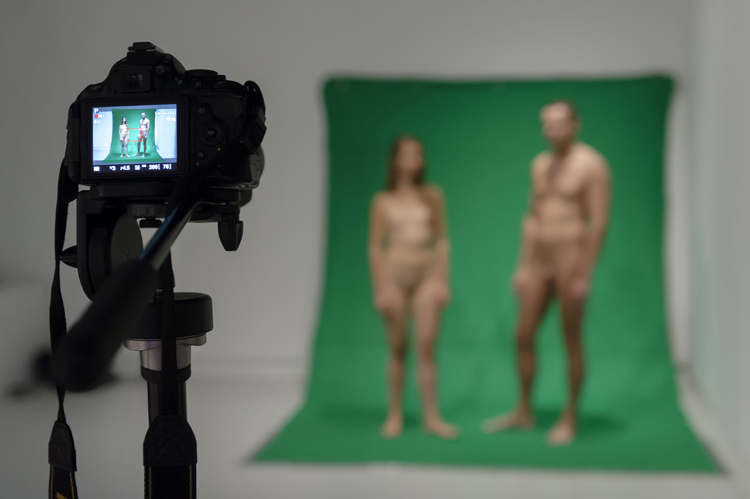
Modellen poseren voor een green sceen (foto: Ben Nienhuis)
{kind=link}
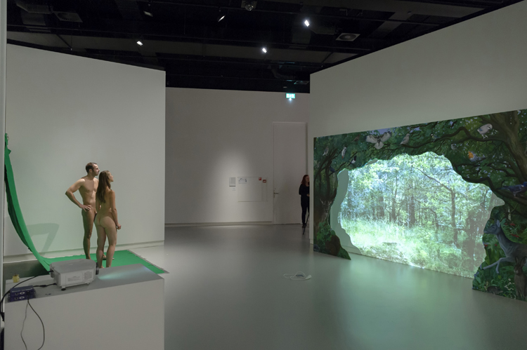 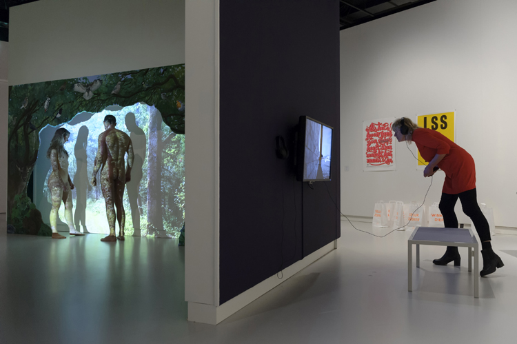
De studio/set in het museum. Bezoekers waren getuige van het maakproces.(foto's: Ben Nienhuis)
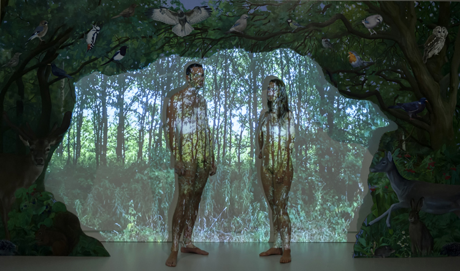
Performance in de installatie (foto: Ben Nienhuis)

De modellen gemonteerd in de film (25 minuten) (foto: Ben Nienhuis)
Hieronder enkele filmstills

 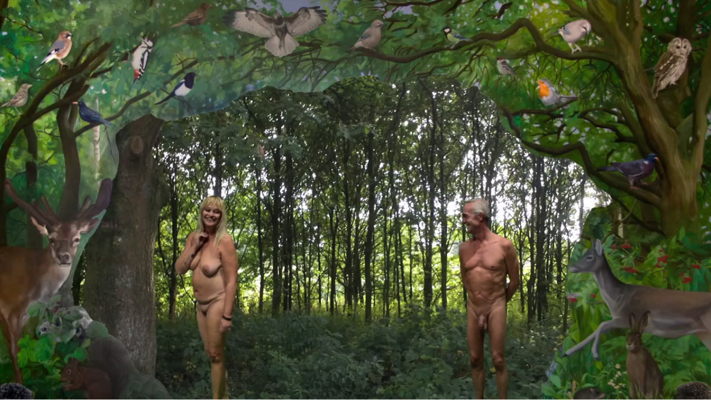 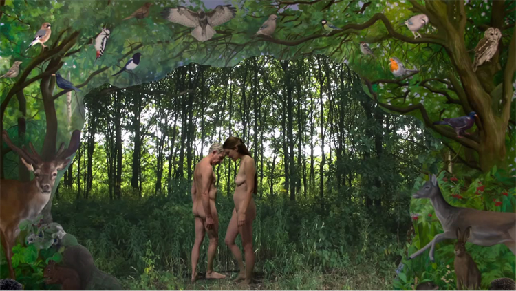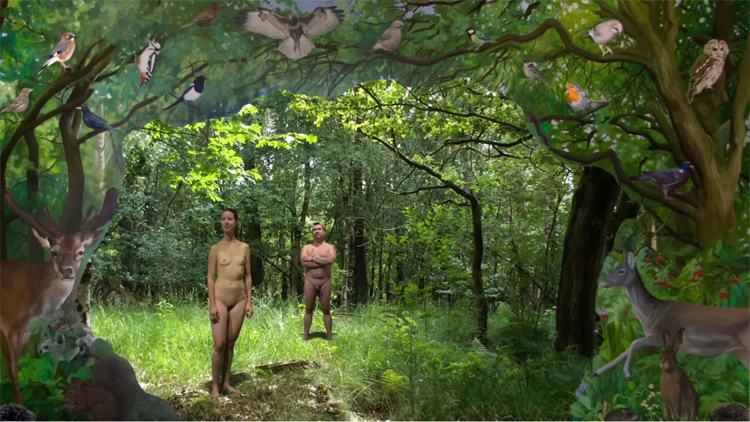 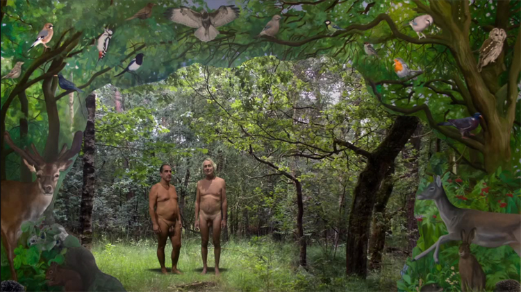 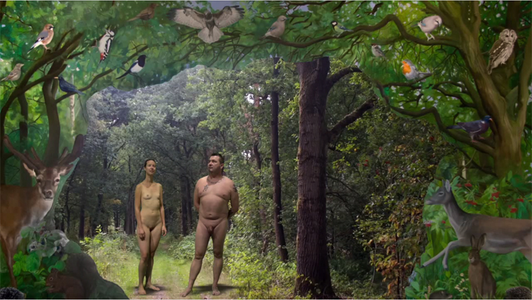 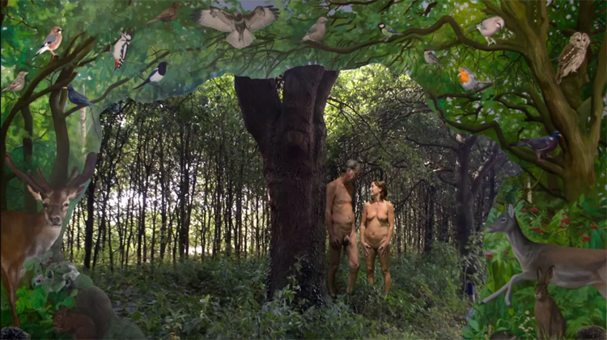
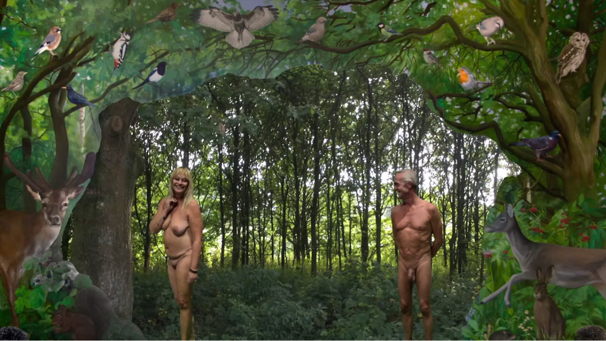 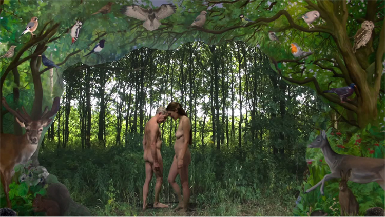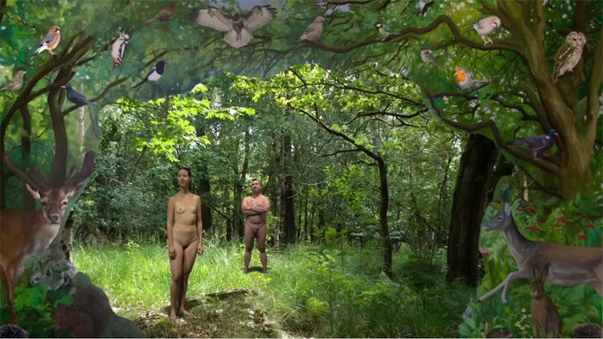 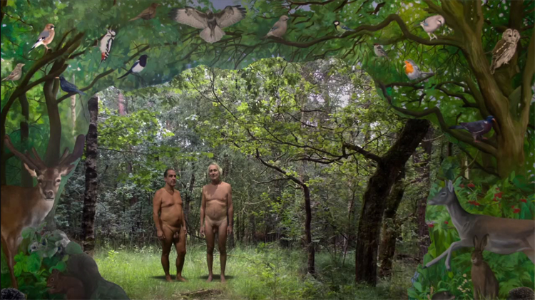 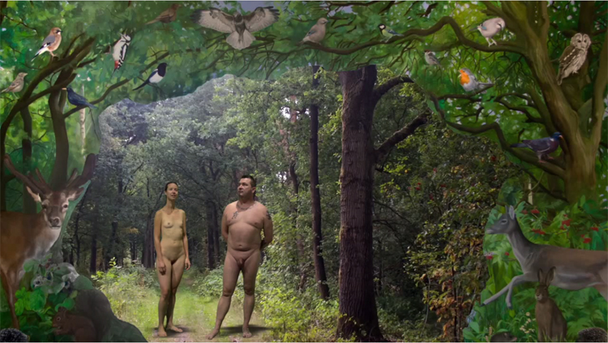 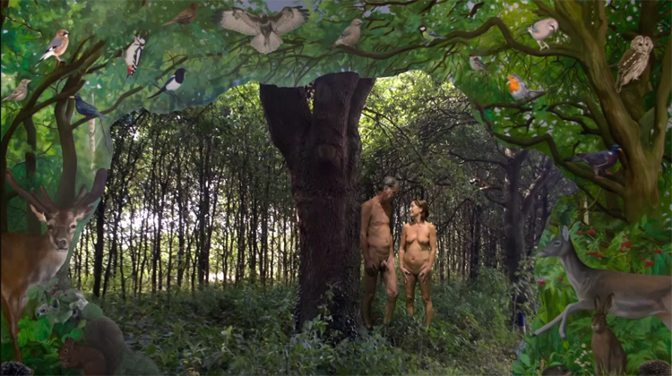
Op de laatste dag van de tentoonstelling kwamen alle modellen nog eens samen om naar de film te kijken. Ze poseerden gekleed en naakt voor de installatie.Lees meer


In project Picknick in het bos/Het woud der verwachting in de Willem2fabriek heb ik themapicknicks georganiseerd die verfilmd onderdeel uitmaakten van de installatie waarvan één met een groep naturisten die naakt kwamen picknicken. We spraken over natuurlijkheid, het gevoel van vrijheid en geluk dat je krijgt door naakt te recreëren in de natuur, dat naturistencampings schoner zijn, dat men meer respect heeft voor de natuur, en de mensen respectvoller en vriendelijker met elkaar omgaan dan op ‘textielcampings’. Rangen en standen verdwijnen omdat je niks te verbergen hebt, en wellicht daardoor kunnen ook intensere vriendschappen ontstaan, van mens tot mens los van ‘de verpakking’.
In het kader van Reïnventing happiness wilde ik opnieuw een paradijs uitvinden waarin hedendaagse Adam’s en Eva’s van verschillende leeftijden naakt gingen plaats nemen. Zes dagen (God schiep de wereld in 6 dagen, de zevende dag was een rustdag) lang kwamen iedere dag een man en vrouw (een uur) naakt poseren als Adam en Eva voor een geschilderd paradijs (decor).
Volgens het bijbelverhaal van Adam en Eva schiep God het Hof van Eden; het aards paradijs, tot het moment dat Eva van de verboden vrucht at en zij zich vervolgens bewust werden van hun naaktheid en zich gingen schamen. God strafte hen door hen te verbannen uit het paradijs en ze werden sterfelijk. Je zou het kunnen zien als een metafoor voor het volwassen worden; het ontwaken uit een droomtijd, van kind naar volwassene.
Ik stel me met Reïnventing paradise de vraag of het mogelijk is terug te keren naar het paradijs van voor het moment van schaamte, naar het moment van naakte oneindige vrijheid in dit geval in een gecreëerde (culturele) natuur.
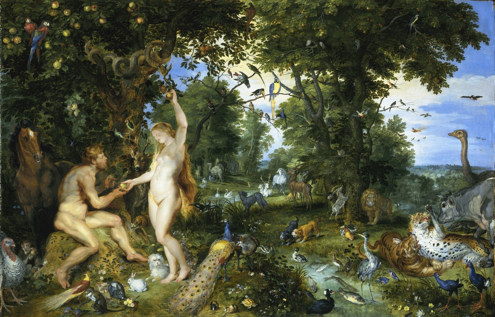
Het aards paradijs door Peter Paul Rubens (1577-1640)